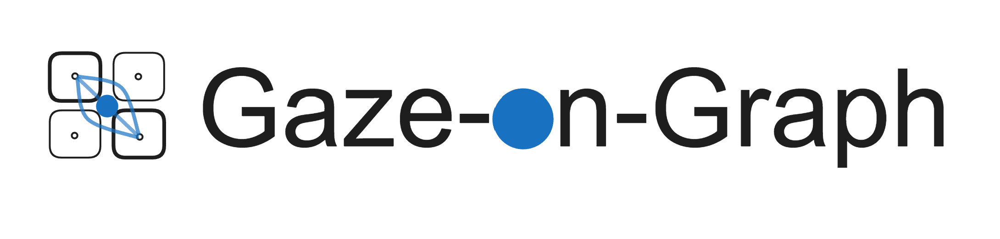
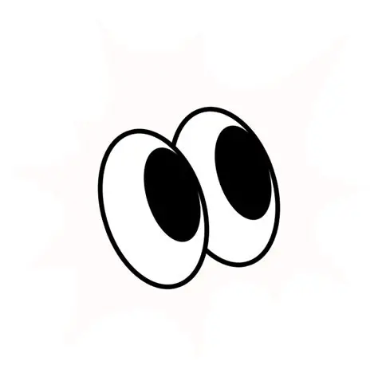
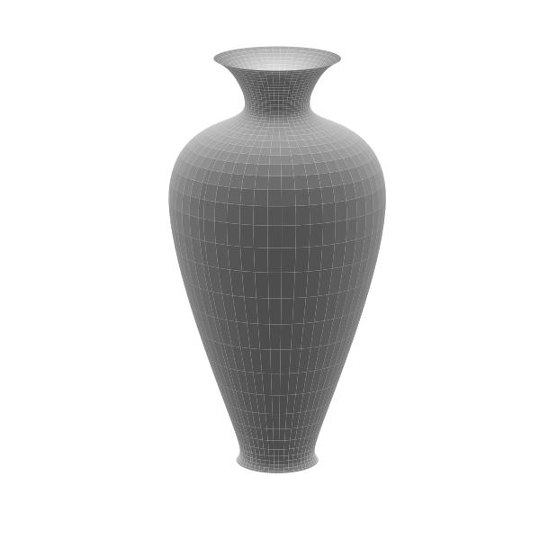

本实验主要收集您在设计方案评价过程中的注视、面部动作和鼠标信息，所有数据均用于人机交互相关学术研究用途，本团队保证数据不会被泄露作为其他用途。 本实验平台主要分析您的注视点和转移次数，您的具体的眼动数据和面部录像在实验和分析过程中不会被存储。
这是一个花瓶3D造型设计任务，你需要根据你自己个人偏好，为自己的公寓挑选几款花瓶作为装饰品。 本实验平台具备智能设计功能，每次迭代会给你呈现16个花瓶的造型方案，你需要根据你的个人偏好对这些方案进行比较，进行相对偏好评分+选择。

请按要求点击并注视红色的圆点，每个圆点需要连续点击5次（直到圆点变成黄色）， 走神的时候请不要点击鼠标。 完成9个点的点击后，请根据提示要求完成验证。

你需要对方案进行滑动评分,评分顺序可以自由发挥;同时你需要完成方案选中,鼠标左键点击表示选中该方案为满意方案，鼠标左键再次点击表示取消选择。 每一批次的设计方案中，满意方案为0-3个。